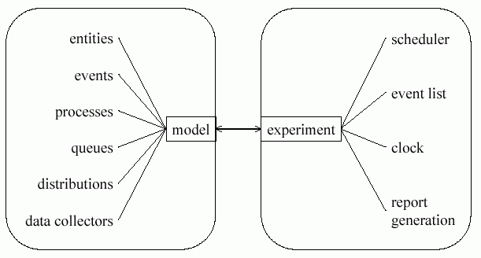

DESMO-J in a Nutshell
Basic Features
The framework DESMO-J extends Java by adding features which greatly simplify the construction of discrete-event simulation models. It provides the modeller with
- ready-to-use classes for common model components like queues, stochastic distributions based on random number streams, and data collectors.
- abstract classes to be adapted to model-specific behaviour, like model, entity, event, and simulation process. Depending on the modelling style applied you will have to either define your own simulation processes or define your own entities and events.
- ready-to-use simulation infrastructure comprising scheduler, event list, and simulation time clock, all encapsulated in an experiment class. This experiment class also provides for the generation of reports and traces of a simulation run.
DESMO-J supports the separation of model and experiment, a widely acknowledged requirement of good simulation software as it allows for performing the same experiment with different models which may represent competing system designs or alternative strategies as well as performing different experiments with the same model. In DESMO-J the model class handles all model components whereas the experiment class provides the simulation infrastructure. Both are explicitly connected during a simulation run.

The framework is structured into several Java packages:
desmoj.core provides within its sub-packages all the necessary classes to start modelling with DESMO-J:
desmoj.core.simulator contains the core classes needed to build a model and set up an experiment. Every simulation model will have to derive a subclass of Model which sets up the model and connects it to an experiment (an instance of Experiment) which in turn controls the simulation run. Other classes in this package comprise model components which can either be used directly like Queue or ProcessQueue or have to be subclassed like Entity, Event, and SimProcess.
desmoj.core.dist provides numerous probability distributions with high statistical accuracy. They are based on a linear congruential random number generator by Donald Knuth, as implemented in java.util.Random. All distributions can be sampled and return floating point, integer or boolean values depending on their type, i.e. their abstract super class RealDist, IntDist or BoolDist, respectively.
desmoj.core.exception contains classes for the framework's internal exception handling and can safely be ignored by modellers.
desmoj.core.report provides DESMO-J's automatic report functionality. At the moment, output can be generated in HTML and XML formats. This package can equally be ignored by modellers.
desmoj.core.statistic provides a wide range of data collectors, from simple counters (Count) to (non) time-weighted mean and deviation of time series data (Tally, Accumulate) to frequency distributions (Histogram). All data collectors' statistics will be computed and displayed automatically in the end-of-run report.
desmoj.core.advancedModellingFeatures contains classes to be used in modelling process synchronisation on a more abstract level.
desmoj.extensions.applications contains useful extensions to the core DESMO-J to facilitate model building in several application domains.
desmoj.extensions.experimentation provides a basic graphical user interface to DESMO-J to run experiments and view results.
The sections DESMO-J Distilled, Processes Step by Step and Events Step by Step of this tutorial give instructions on how to use DESMO-J. You can always refer to the API documentation for details on each class and package.